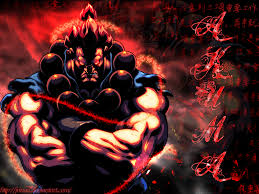
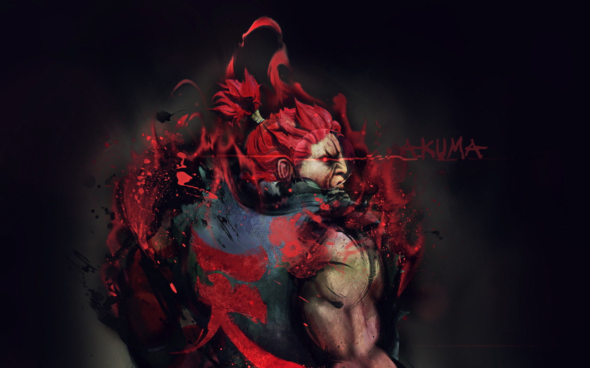
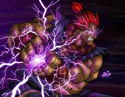
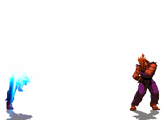

Royal
Aggression
BIOGRAPHY
AKUMA
(known Gouki in Japan) trained under Goutetsu along with his brother, Gouken. Goutetsu taught them Ansatsuken (Assassin Fist), which is a mixture of karate, judo, and koppo. As the brothers progressed under Goutetsu's teachings, a dispute arose on the true nature of Ansatsuken and the path to master it. Gouken, unable to accept the violent nature of Ansatsuken, left Goutetsu to begin his own dojo. Akuma continued Goutetsu's teachings and vowed to use Ansatsuken as it was intended.
In order to learn Shun Goku Satsu, Akuma embraced the principle of Satsui no Hadou or (The Surge of the Intent to Murder/Murderous Intent). Through Satsui no Hadou, Akuma was forced to give up any compassion he held towards other human beings. In addition, Akuma realized his limits as a martial artist could be expanded, and left Goutetsu's guidance to train alone on an island (Gokuento).
His return marked the end for Goutetsu... Akuma demonstrated his strength by killing his former master with Shun Goku Satsu. Goutetsu fell with an inner joy, realizing his pupil was attempting to master Ansatsuken. Akuma removed the beaded necklace from Goutetsu's neck and placed it around his own. The following day Akuma challenged and fought his brother. With Gouken gaining the upper hand, Akuma was eventually struck down. Akuma requested death in defeat, however his brother was unable to kill his own kin. Akuma, sensing weakness, mocked Gouken and struck with Shun Goku Satsu. The dojo was filled with a burst of white light and Gouken was killed. Ken saw the flash as he was returning from the U.S. Martial Arts tournament. Rushing to the dojo to find it in shambles and his master dead, an enraged Ken ran into the surrounding woods searching for the killer. Akuma easily defeated Ken and disappeared. Gouken's other student Ryu soon learned of his master's death and began to search for Akuma.
Akuma first fought Ryu at his island, Gokuento, and discovered the potential within him. He destroyed the island and told Ryu to come back when he had embraced the killing intent. However, Ryu rejected it. Akuma now practices to be prepared for a battle with Ryu. He also killed Bison during the SF2 series, the only official result of that game.
Akuma
fights only to test his strength and his opponent's. This means that he
will only fight opponents that will provide a challenge, hence his refusal
to fight unworthy challengers under any circumstances. Akuma will only
kill opponents who are as strong as he, which is why he stopped his fight
with Gen after realizing that he was ill. While
Akuma killed his brother and his teacher, he did so in the confines of
the code of the warrior, where the field of battle does not distinguish
between friend and foe. Akuma believes he committed no transgression whatsoever.
Also, with the exception of Gouken and Goutetsu, Akuma usually only fights
those who challenge him instead of picking fights.
Other fun facts: The name "Akuma"
means Devil or Demon in Japanese. The kanji on the back of his uniform is called
ten. It can mean "sky," "heaven," or "beyond human. Akuma also has a few
alternate, more powerful incarnations of himself including: Shin
Akuma, Cyber Akuma and Oni
Akuma. In addition, a powerful mech based on Akuma called Zero
Akuma appears in the Capcom fighting game, Cyberbots.



